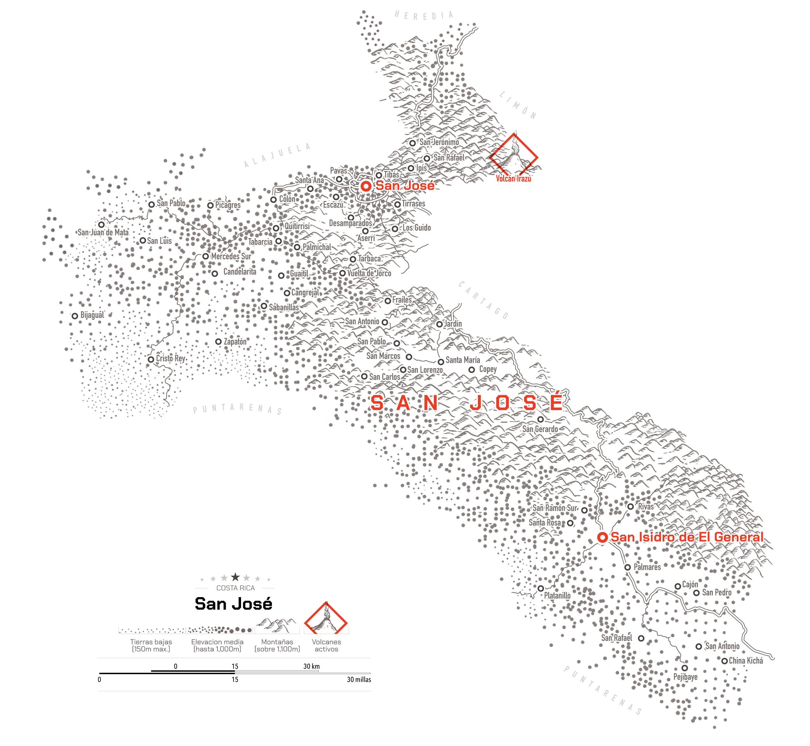
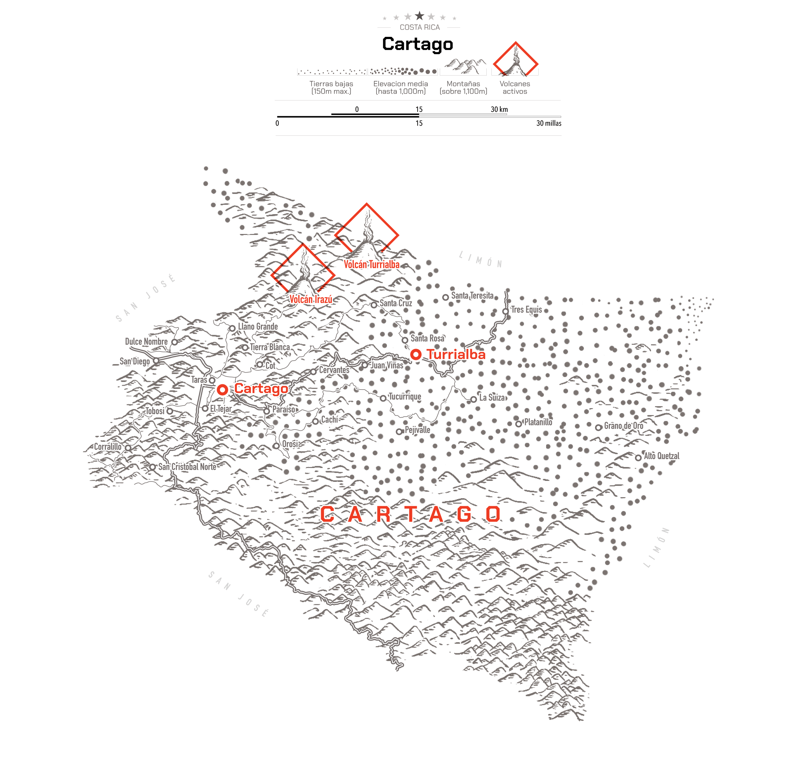
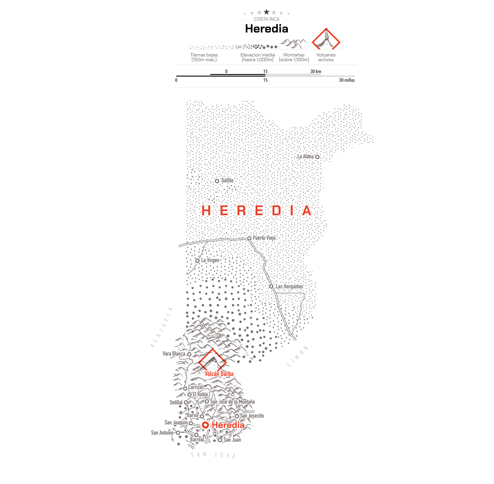
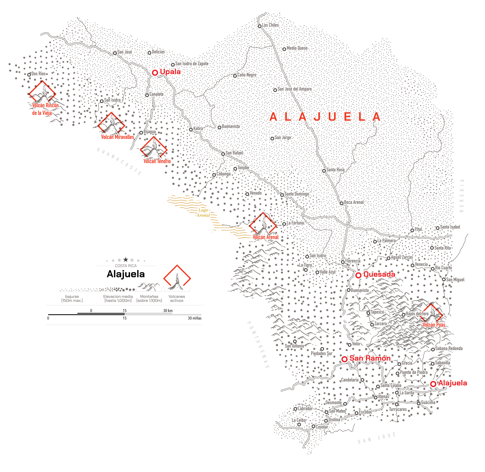
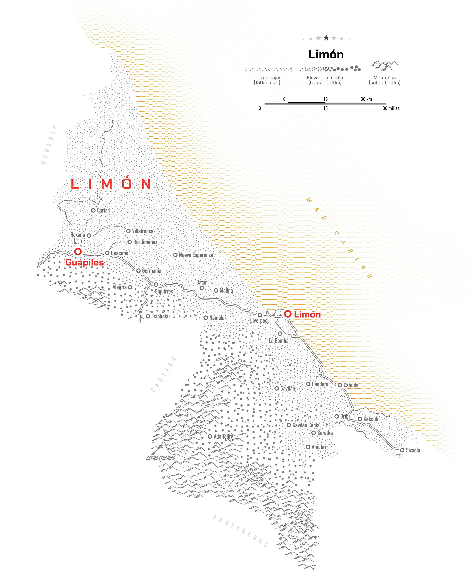
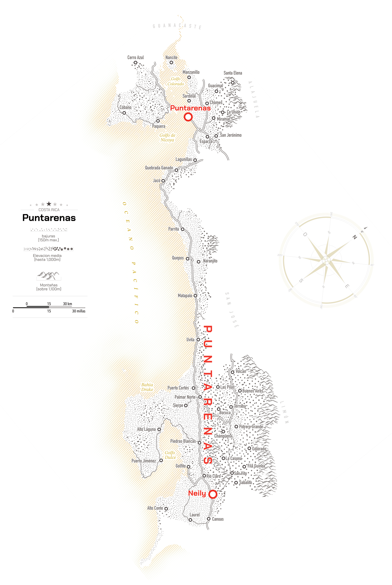
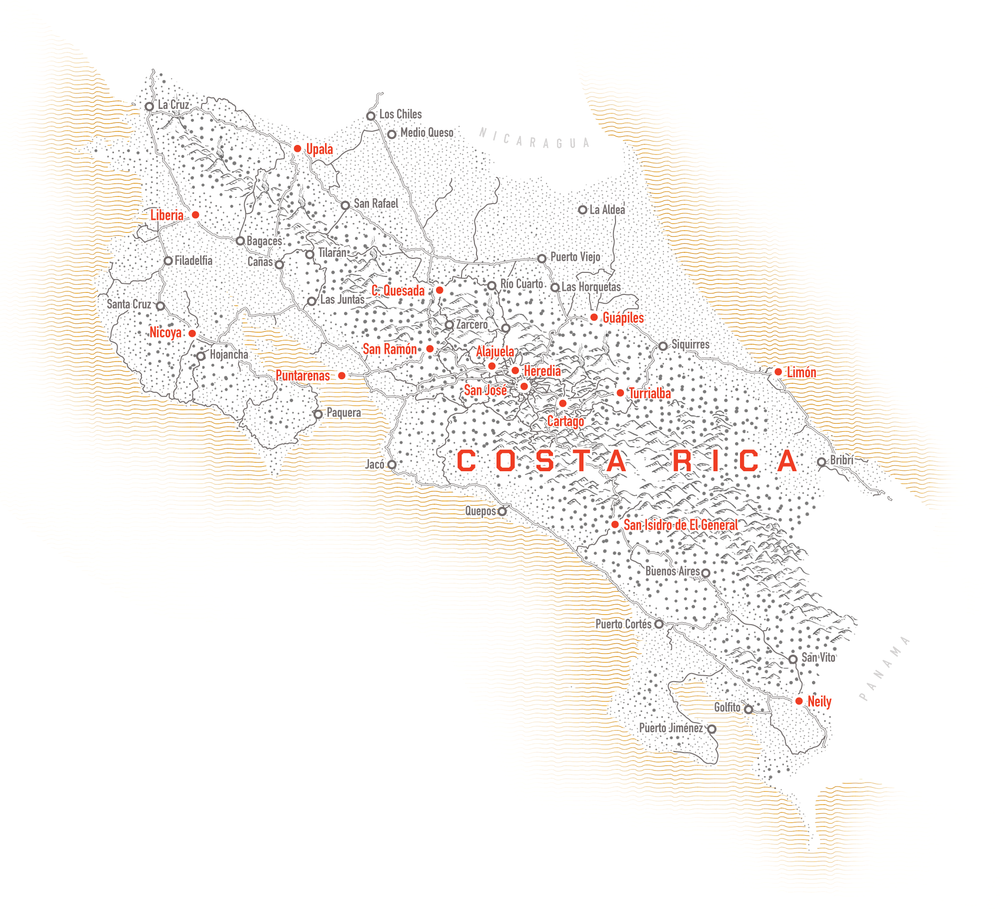

Oct. 2026
Little dots from Costa Rica
When it comes to Costa Rica, the first thing that comes to mind is golden sand beaches, surfing, green forests, and maybe volcanoes. In fact, the northwest region of the country is like that. The Guanacaste province is a very popular destination for its beautiful beaches and vibrant culture. However, Costa Rica has more to offer beyond Guanacaste. I started this post with an idea of a gift for a Guanacastecan friend of mine and then I thought... well, actually now that I have the gift, why not doing the rest of the country in the same style?.
So, this is the result of that idea, I named these series of maps "Little dots from Costa Rica" as in little things here and there.
If you ever go to Costa Rica, I would recommend you to fly strait to the Guanacaste province. To the International Airport in Liberia, the gateway to the resorts, beautiful beaches and vibrant nature. The map above highlight active volcanoes so the hotels nearby often have thermal waters, light-blue rivers and lush green surroundings. Take a kayak ride into the Arenal lake with the iconic Arenal Volcano in the background.
But as I said above, the country has more beyond Guanacaste. I grew-up in the mountains, some 1,800 meters above sea level, in the province of San José. The climate is stable all-year round, with mild temperatures. In the map below you can find my town in a valley, towards the center, look for "Santa María" if you like coffee, you definitely need to remember that valley. But you can also take a trip to the cloud forests San Gerardo. Most people don't think you can visit a forest with trees of hundreds of years at 2,600 meters above sea level. It actually gets a little chilly there, so take some cosy sweaters and enjoy hummingbirds, quetzals, trouts and the silence and peace of the forest.

My family and some friends joke because I have hard times in warm weather. I lived half of my life up in the mountains and was born in the rainy and cold province of Cartago. But even there you can find some quite nice stuff. Take for example a short trip to the city, you will notice that this city has perfect grids, that's probably the only place in the country where streets follow perfect geometry due to the past dealing with earthquakes and floods. In the middle of the city you will find the Ruins of the Cathedral, a building that Catholics tried to erect several times, but which earthquakes knocked down again and again, until they decided to build it elsewhere. Locals say the Virgin did not want her home in the middle of the city.
But Cartago is also home to the Irazú and Turrialba, active volcanoes with stunning views. If you are lucky, on a clear sky day you might be able to see the Atlantic and the Pacific just by turning your head a little bit.

You have meet the touristy Guanacaste, my hometown in San José and the perfect gridded Cartago, but Costa Rica has seven provinces, the narrowest being Heredia.
Heredia is known by locals as "The city of flowers" what else you need to know with that description. However, you should watch out carefully if you're driving, ticos also know the Heredia as the place you walk in the middle of the street as a joke because the historical center has very narrow sidewalks. Funny isn't? The narrowest territory, also happens to have famous super-narrow sidewalks.

West of Heredia, you have Alajuela, the main international airport is there. But most relevant, Alajuela is home of the second largest volcano crater, the Poás. The surrounding areas are some of favourite forest in the country because it beauty. Of course if the volcano is not erupting... But don't worry, it's pretty safe. Some of the most impressive natural canyons in the world are also found in Alajuela, if you are into real explorer mode, you must check out Bajos del Toro in Alajuela... Google it and you will see what I'm talking about. Look for that label just right of the Poás Volcano below. Fun fact, Alajuela has a town named "Medio Queso", its literal translation means "Half-a-cheese", so many questions there right?
Give it try and find the Half-a-cheese town in the map below.

The Caribbean province is a true melting pot of cultures. This is clearly reflected in the names of the towns on the map—from the Afro-Caribbean influence seen in "Liverpool" and the indigenous Talamanca name "Amubri," to the Cabécar term "Tsiöbata" and even the colonial-era "Villafranca." With breathtaking nature reserves like Tortuguero, idyllic beaches, unique music, Caribbean cuisine, and warm, welcoming people... that is Limón.

The province of Puntarenas has this long stretch of coastline along the Pacific Ocean, so naturally, it was a challenge to map in the same style as the rest of the provinces, as you can see below, I had to make some adjustments. Costa Rican’s are proud of every inch of their land, either if it’s up in the high mountains, far away from the coast on a little island or along a narrow strip of land by the ocean. When I was young, my parents used to take me every year for a short trip to the sea. The nearest was the pristine coast of Puntarenas, nearby Quepos to the Manuel Antonio National Park. Every Costa Rican carries a picture of that national park on their national identification documents "cédulas". Take a look here why we have chosen Manuel Antonio National Park to be our emblem.

The country spans over 12 distinct ecosystems from lowland tropical rainforests and cloud forests to mangroves, coral reefs, and deep oceanic trenches. As you observed in these maps, little dots mean low, warm lands, and they move all the way up to the paramo regions in the high mountains over 12,000 feet over the sea level. That little piece of land houses about 6% of the world’s biodiversity, and it represents just 0.03% of the Earth’s landmass, so not too bad for such a tiny place right?
The nice part of g so much diversity in such a small place is that you can see a lot whithout traveling too far from each point of interest, that’s a sweet deal indeed.

So, that's my homeland. If you ever visit Costa Rica, I hope you have a great time, it's a small country, but with plenty to see. Thanks for visiting my maps blog.
Funtography –Nº22, Oct. 2026
Shareable permanent link ↗